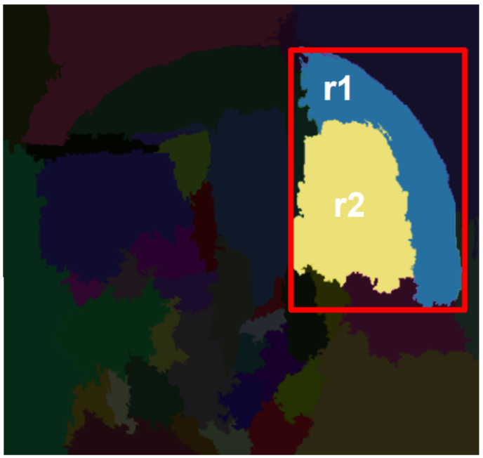
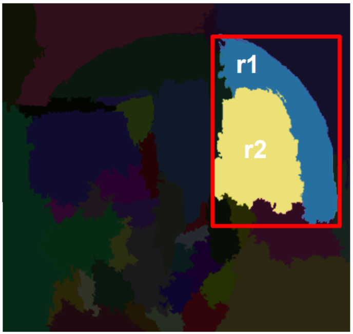

Object Detection
Nikhil Sardana
December 2017
Introduction
Introduction
Convolutional Neural Networks (CNNs) allow us to classify images. However, it is reasonable to ask if we use Convolutional networks to detect and classify objects in images. Object detection is applicable to a wide variety of fields, including autonomous driving, video surveillance, facial detection, and manufacturing. For example, in a self-driving car, cameras must be able to detect street signs, pedestrians, lane lines, guardrails, buildings, and more, quickly and accurately to prevent crashes.
This lecture discusses four object detection networks: R-CNN, Fast R-CNN, Faster R-CNN, and Single Shot Detectors (SSD). Fast R-CNN and Faster R-CNN modify the R-CNN architecture to improve speed and performance. The Single Shot Detector is an entirely new network design. This lecture is intended for readers with understanding of traditional Convolutional networks, but no prior knowledge of object detection networks. Understanding of Fully Convolutional Networks is recommended prior to reading the “Faster R-CNN" section.
R-CNN
The Region-based Convolutional Neural Network (R-CNN) is relatively simple. First, we propose some regions of an image which contain objects. We feed these regions into a CNN, and then we use an SVM to classify the outputs for each class.

If we wish to have a CNN classify objects in images, we need to feed in a region of the image to the CNN. Of course, the question becomes: How do we know which regions to feed into a network? We cannot possibly try every single possible region of an image; there are too many combinations. We must have a way to propose regions which are likely to contain objects.

Too many regions!

Only some are useful.
R-CNN is agnostic to the region proposal algorithm. The original R-CNN uses the Selective Search algorithm, which we will describe below. Since selective search, various region proposal methods have been developed.

Selective Search
Selective Search is based upon the principle of segmentation to propose regions. If we can segment an image into objects, we can simply surround the segmented areas with rectangles, and use the rectangles as our input regions into the CNN.

Wouldn’t we need another CNN to perform the segmentation? How could this possibly be efficient? In fact, we will talk about using CNNs for segmentation later, but Selective Search uses an efficient segementation technique to generate region proposals. Selective Search is efficient simply because we only care about recall:
\[Recall = \frac{TP}{TP + FN}\]
In other words, we don’t care about the number of False Positives (\(FP\)) regions, or regions without any objects, as long as each of the objects in the image is in at least one proposed region. Our CNN can take care of the false positives, but if all of our proposed regions completely miss an object, we never get the chance to classify it at all.
Segmentation
The actual segmentation algorithm used by Selective Search is not novel at all. Rather, Selective Search uses the algorithm proposed in “Efficient Graph-Based Image Segmentation" by Felzenszwalb et al. (2004). The algorithm is decidedly non-trivial, and I will not attempt to explain it here. However, two things are important for us to know.
First, the segmentation algorithm is highly efficient, running in \(O(n\log n)\) time to the number of pixels. Second, the algorithm tends to over-segment. Notice how the letters on the lower baseball player’s jersey are segmented from the rest of the jersey. The jersey is segmented from the head of the player.

None of these segmented regions fully contains an object (a baseball player), and thus, none of them are suitable for drawing a box around and using as an input for our CNN.

We wish to somehow separate objects from one another and the background, while maintaining parts of an object together which may look nothing alike. For example, in the car below, the wheels are part of the car, and yet have a different size, shape, and color than the body of the car. The chameleon, on the other hand, is the same color as the leaves around it; it is distinguishable only by texture.

Texture distinguishes the chameleon.
Texture distinguishes the chameleon.
This is where Selective Search comes in. Selective Search proposes a novel method of combining alike segmented regions, and recursively merging them to encompass entire objects while simultaneously reducing the number of proposed regions.
Recursive Combination
The figure below shows Selective Search after progressively more iterations. Blue boxes are false positive candidate objects, green boxes are true positive candidate objects. By recursively combining segmented regions, Selective Search drastically cuts down on false positives while increasing true positives.

Selective Search is greedy. From a set of regions, we choose the two that are most similar, and combine them into a single region. We repeat this until a single region remains (of course, we never actually reach a single region).
The question then becomes: How do we decide which regions to combine? In other words, how do we determine similarity between regions?
Similarity Metrics
There are four similarity metrics: color, texture, size, and shape compatibility. We could simply use RGB color, but changes in shadows and light intensity affect RGB values. If an object is unevenly lit, we want color values to remain the same throughout. So, we can use HSV (hue, saturation, value) color, which is invariant to lighting changes. Saturation is insensitive to shadows, and value is insensitive to brightness change. An alternative is Lab color (below HSV diagram), which is designed to approximate human vision, The \(L\) component matches the human perception of lightness, and the \(a\) and \(b\) components are color channels.

HSV color.

Lab color.
To calculate color similarity, we simply take take the HSV/\(Lab\) color information from each pixel and create a histogram for each channel. We then find the histogram intersection.

An illustration of an RGB color histogram for an image. I couldn't find an illustration for an HSV or Lab color histogram.

The intersection of two histograms is the sum of the heights of the minimum bars.
The color similarity \(s_{color}\) between regions \(r_i\) and \(r_j\) for a histogram with \(n\) bins over \(m\) color channels is:
\[s_{color}(r_i, r_j) = \sum_{c=1}^m\sum_{k=1}^n \min(c_i^k, c_j^k)\]
Here, \(c_i^k\) is the height of the \(k\)th bar in the histogram of the color channel \(c\) of the region \(i\).
The next similarity metric is texture. We can create a map of edges by taking Gaussian derivatives of an image. You can think of this like the Canny edge detection algorithm.
We know from basic computer vision that we blur an image using Gaussian smoothing. This is generated by convolving an image with a kernel of Gaussian values, i.e. a kernel with the values
\[G(x,y) = \frac{1}{2\pi\sigma^2}e^{-\frac{x^2+y^2}{2\sigma^2}}\]
However, by taking the partial derivatives of the Gaussian, we can separate this into horizontal and vertical edges:

Using a smoothing filter, we remove “high-frequency" components. The value of a smoothing filter can never be negative. On the other hand, derivative filters give high absolute values at points of high contrast.

Note how the x-derivative generates vertical edges, and the y-derivative generates horizontal edges.
Selective Search calculates Gaussian derivatives in eight directions for each color channel. Shown below are four Gaussian derivatives. Then, for each Gaussian derivative, we create a histogram with 10 bins. We of course find the histogram intersection using a very similar formula to the one for color similarity.

Four Gaussian derivatives.
Hence, the texture similarity \(s_{texture}\) between regions \(r_i\) and \(r_j\) for a histogram with \(n\) bins over \(m\) color channels, each with \(p\) Gaussian derivatives is:
\[s_{texture}(r_i, r_j) = \sum_{g=1}^p\sum_{c=1}^m\sum_{k=1}^n \min(g_{c_i}^k, g_{c_j}^k)\]
Here, \(g_{c_i}^k\) is the height of the \(k\)th bar in the histogram of the Gaussian derivative \(g\) of the color channel \(c\) of the region \(i\).
Size similarity is trivial. We wish to combine smaller regions into larger ones; to increase our similarity metric between small regions, we simply set the size similarity \(s_{size}\) of two regions \(r_i\) and \(r_j\) to \[s_{size}(r_i, r_j) = 1 - \frac{size(r_i) + size(r_j)}{size(image)}\] Lastly, we have shape compatibility. We wish for our merged regions to fit together cohesively. Again, the formula is decidedly trivial. We simply take the difference between the size of the bounding box \(BB\) and the sum of the region areas. Then, we divide this by the size of the image (to normalize the difference to a maximum of 1), and subtract from 1 so that smaller differences have greater similarity.
\[s_{fill}(r_i, r_j) = 1 - \frac{size(BB_{ij}) - size(r_i) - size(r_j)}{size(image)}\]
 

Finally, we arrive at our overall similarity metric \(s\), a linear combination for the four sub-metrics. In the formula, \(a_1\), \(a_2\), \(a_3\), and \(a_4\) are constants.
\[s(r_i, r_j) = a_1s_{color}(r_i, r_j) + a_2s_{texture}(r_i, r_j) + a_3s_{size}(r_i, r_j) + a_4s_{fill}(r_i, r_j)\]
Evaluation
We can measure the accuracy of Selective Search using the Average Best Overlap metric. ABO is the average across all images (and objects) of the area overlap of the best selected box and ground truth box. In the accuracy tables below, the reported metric MABO refers to Mean Average Best Overlap.


Selective Search not only works best when all four similarity metrics are used (see table above), but also significantly outperformed all other methods at the time of publication (below). Note the inclusion of the recall metric below. Note that Selective Search “Quality" is simply a slower, but more accurate, ensemble method of Selective Search, and the R-CNN paper uses the “Fast" version of Selective Search we have detailed above.

Now that we’ve taken this rather in-depth detour into the inner workings of Selective Search, let us return to R-CNN with our thorough understanding of its region proposal mechanism.
The CNN
The original R-CNN paper used AlexNet as the CNN backbone, but any large CNN (pre-trained on ImageNet) works well. Note that ImageNet only has standard image-level annotations, not object-level annotations. Nevertheless, pre-training greatly improves performance. However, since ImageNet has 1000 classes, after pre-trainining, we replace the 1000-way classification layer with a layer of length \(N+1\), where \(N\) is the number of object classes (the \(+1\) is for the “background" class).

Selective Search proposes 2000 regions (also called Regions of Interest or RoIs) that are then run through the CNN. Since a CNN requires a fixed input size, and our region proposals can be any size or shape rectangle, we first warp the region to the input size (for AlexNet \(227\times227\)). We then fine-tune the CNN to our domain (i.e. object detection). When training the CNN, we treat all regions with \(\geq 0.5\) IoU overlap between the predicted and ground-truth boxes as positive samples, and the rest as negatives for all classes (background).


Object Category Classifiers

Now that we’ve covered the region proposal and CNN parts of R-CNN, we can discuss training the binary SVM classifiers. We define positive examples as only the ground truth boxes. We set regions with an IoU overlap \(\leq 0.3\) as negative examples for that class. Regions with \(0.3<IoU<1\) are ignored. One linear SVM is optimized per class.
It is reasonable to ask: Why use SVMs at all? Why not just use a softmax layer of size \(N+1\) as the last layer of the Convolutional network, and use that to classify objects? In addition, why is the IoU threshold different for the SVM training than the IoU threshold for CNN fine-tuning?
Let’s first consider the IoU threshold question. Because we cannot prove anything in machine learning (rather, we can only prove very limited results), the authors can only hypothesize why this configuration of IoU thresholds works the best. If the authors expand the definition of positive examples for the SVM to include any regions with IoU \(\geq 0.5\), the number of positive examples increases thirty-fold. The authors hypothesize that this larger positive dataset is useful when fine-tuning the entire network (i.e. the CNN), but because it does not teach the network precise localization, accuracy declines when using this looser definition of positive for SVM training.
The \(0.3\) threshold for defining negative examples for the SVM was found through experimentation. Using \(0.5\) or \(0\) decreased performance dramatically (mAP decreased 5 and 4 points, respectively).
Next, let’s address the softmax question. The simple answer is that the authors tried using an \(N+1\)-way softmax classifier, and mAP decreased \(3.3\) points. Again, we cannot prove why softmax causes a decrease in mean average precision, but the authors hypothesize that the definition of positive examples (which we discuss in the above paragraphs) was one of the contributing factors.
Bounding-box Regression
You may have noticed the second “head" of the network labeled “Bbox reg" in the above diagram. Bounding-box regression improves localization performance. We train the bounding-box regression using the input-label pairs \(\{(P^i, G^i)\}_{i=1,\dots,N}\) where \(P^i = (P^i_x, P^i_y, P^i_w, P^i_h)\). \(P_x\) is the x-coordinate center of the predicted bounding box, \(P_y\) is the y-coordinate center of the predicted bounding box, \(P_w\) and \(P_h\) are the width and height of the predicted bounding box respectively. \(G^i = (G^i_x, G^i_y, G^i_w, G^i_h)\), and refers to the above parameters of ground-truth box. We have four parameters to transform \(P\) into \(G\). \(d_x(P)\) and \(d_y(P)\) translate the center coordinates, and \(d_w(P)\) and \(d_h(P)\) transform the width and height.
The specifics of the regression math are unimportant for our study, rather, an understanding of how different predicted boxes affect the regression is more useful. Know that not only do we wish for our predicted center to match the ground truth center, but also the predicted box height and width to match the ground truth. The coordinates in the figure below correspond to \((d_x, d_y, d_w, d_h)\).

Performance
R-CNN outperformed previous methods on object detection tasks.

However, there are a few caveats. First, R-CNN is slow. Using a VGG16 backbone, R-CNN was reported to take 47 seconds per image. In addition, training is also slow (84 hours reported). Think about it—we have to run the Convolutional network for each of our 2000 proposed regions! Finally, there are issues with the network itself. Training is a multi-stage complex pipeline, with post-hoc linear SVM and bounding-box regression training. Luckily, many of these problems were solved with Fast R-CNN.
Fast R-CNN
Fast R-CNN improves upon R-CNN by running the entire image through the convolutional network, rather than proposing regions first. As a reminder, a feature map is simply the output of a filter applied to the previous layer. A filter is another word for a kernel, which you should remember from our lecture on CNNs.

Now, instead of running the CNN 2,000 times, we can just run it once. Instead of taking crops from the image, we instead take crops from the convolutional feature map corresponding to the regions of interest in the image.
RoI Projection
The diagram below makes it clear that we propose regions of interest from the input image. These are generated using a region proposal algorithm (e.g. Selective Search), just like they were in R-CNN.

However, in Fast R-CNN, as the first diagram shows, these regions of interest are then projected onto the convolutional feature map. This allows us to re-use the expensive convolutional computation. We take crops from this feature map and run them through the rest of the network. The question then becomes: how exactly do we project a region of the input image onto a region of the convolutional feature map?
The SPPNet paper (“Spatial Pyramid Pooling in Deep Convolutional Networks for Visual Recognition" by He et al.), which came out between R-CNN and Fast R-CNN, first introduced the idea of RoI projection. In the SPPNet paper, the authors pad each layer with filter size \(F\) by \(⌈ \dfrac{F}{2} ⌉\) pixels.
If we remember from the CNN quiz, we know that a Convolutional layer with input volume \(W_1 \times H_1 \times D_1\), number of filters \(K\), filter size \(F\), stride length \(S\), and amount of zero padding \(P\) has output volume of size \(W_2 \times H_2 \times D_2\). \(W_2\), \(H_2\), and \(D_2\) can be calculated using the following formulas:
\[W_2=\dfrac{W_1+2P-F}{S} + 1\] \[H_2=\dfrac{H_1+2P-F}{S} + 1\] \[D_2=K\]
Substituting in \(P\) for \(\dfrac{F}{2}\), we find for even \(F\): \[W_2=\dfrac{W_1}{S} + 1\] \[H_2=\dfrac{H_1}{S} + 1\]
and for odd \(F\): \[W_2=\dfrac{W_1-1}{S} + 1\] \[H_2=\dfrac{H_1-1}{S} + 1\]
Thus, the SPPNet paper states that for a region projected onto a feature map with central coordinates \((x',y')\), the center of the region on the image is:
\[(x,y) = (S'x', S'y')\]
Where \(S'\) is the product of all previous stride lengths (Remember, there are multiple pooling and convolutional layers between the input image and the final feature map). Finally, given the coordinates for the left, right, top, and bottom of the input region \(x_L\), \(x_R\), \(y_T\), \(y_B\) respectively, we find the coordinates of the receptive field in the filter map:
\[x'_L = ⌈ \frac{x_L}{S'} ⌉ +1\] \[x'_R = ⌊ \frac{x_R}{S'} ⌋ -1\] \[y'_T = ⌈ \frac{y_T}{S'} ⌉ +1\] \[y'_R = ⌊ \frac{y_B}{S'} ⌋ -1\]
The proof for these formulas, along with the \((x,y)\) formula above, are left as exercises for the reader. Note that this math is not overly important, as the entire RoI projection is done away with for Faster R-CNN.
The authors of the SPPNet paper leaves us with a final caveat: If the padding is not \(⌈ \dfrac{F}{2} ⌉\), then “we need to add a proper offset", but the authors give no calculation for such offset.
RoI Pooling
We need to run our RoI projections (crops of the convolutional feature map that correspond to regions of interest in the input image) through fully connected layers. However, these fully connected layers demand a fixed input size. We must have a way to convert differently-sized regions into a standard size. In R-CNN, we solved this problem by simply warping parts of the RoI. However, that was when our regions were direct crops of the image, and region warping was not part of a network being trained. We need a better technique, one that is differentiable, so that the entire network is trainable. Enter RoI Pooling.
RoI Pooling is similar to max-pooling, which we covered in our first CNN lecture. Let’s say our convolutional feature map has size \(8\times8\), and our first fully connected layer needs an input of size \(2\times2\). RoI Pooling would then follow the figures below.


RoI Pooling with a \(2\times2\) output.
Simply put, if an \(N\times N\) output is desired, the proposed region (black rectangle in the 2nd image) is divided into an \(N\times N\) grid. When the region dimensions are not divisible by \(N\), the sections of the grid will not all contain the same number of pixels. From each section, we take the greatest pixel value, and arrange these values in an \(N\times N\) grid, forming our output. This output is then passed through the fully connected layers.

Training
Fast R-CNN is much faster (and easier) to train since the entire network is trainable, end-to-end. Again, we are training two things: a probability discribution for each RoI (via a \(K+1\)-way softmax, where \(K\) is the number of classes, and the \(+1\) is for the background), and bounding-box regression offsets. No more post-hoc SVMs. One might ask: Hold on, you said SVMs worked better than Softmax for R-CNN. Shouldn’t they also work better for Fast R-CNN? Short answer: No. Again, no proof. Only experimental results.
| Method (VGG16) | Classifier | VOC07 | |
| [0.5ex] R-CNN | Post-hoc SVM | 66.0% | |
| Fast R-CNN | Post-hoc SVM | 66.8% | |
| Fast R-CNN | Softmax | 66.9% |

Blue bars include region proposal algorithm.
Since we are training two things at once, we use a multi-task loss function. The specifics of the loss function are unimportant for our study. Just know that Fast R-CNN greatly improves upon the speed of R-CNN—so much so that the region proposal algorithm takes the vast majority of time during testing.

Blue bars include region proposal algorithm. Red bars do not.
Luckily, Faster R-CNN solves our problem of slow region proposal!
Faster R-CNN
As you can see, computer scientists are great at naming their algorithms.
Faster R-CNN addresses the region proposal problem. Looking back at the table on Page 2, even the fast EdgeBoxes algorithm for region proposal takes 0.2 seconds. Faster R-CNN reduces region proposal to 10 milliseconds (0.01 seconds) through a Region Proposal Network (RPN).
Region Proposal Networks
Selective search is a fixed function. It doesn’t learn. Why not use the information gained from the convolutional network to predict region proposals? In other words, why not predict region proposals from the the very same filter map output we used for RoI projection earlier? Remember, in Fast R-CNN, we realized that we didn’t have to run the convolutional network 2,000 times for our 2,000 regions of interest. Rather, we used the convolutional information, just running the network once, and predicting the regions of interest from a filter map. Faster R-CNN uses that very same filter map to predict region proposals. After all, if convolutions are good enough for classification and bounding-box regression, why wouldn’t they work for region proposals as well?

Faster R-CNN architecture.
The Faster R-CNN architecture is shown above. Note that the only difference between the replacement of the RoI projection with the Region Proposal Network (RPN). The upstream architecture (fully connected layers, softmax classifier, and bounding-box regressors) remain unchanged.
So what exactly is a Region Proposal Network (RPN)? Simply put, it is a small fully convolutional network that takes in a feature map and outputs a set of regions and an “objectness" score for each region (how likely the region is to contain an object).
How exactly does an RPN use a convolution to create proposed regions? Refer to the diagram below left. The “grid" below is the convolutional feature map (RPN input), and we convolve the input with an \(n\times n\) sliding window (kernel).
In the paper, the authors use a \(3\times3\) sliding window. However, since this is on a high-level feature map (which is much smaller than the input), projected on the input image, \(3\times3\) corresponds to a much larger receptive field. Rather than simply classifying “object or no object" and regressing the bounding box coordinates for the sliding window at each position, the authors use anchor boxes to allow for regions of different shapes. At each sliding window position, we generate \(k=9\) anchor boxes, which have aspect ratios \(1:1\), \(2:1\), and \(1:2\), and size \(64\) pixels, \(128\) pixels, and \(256\) pixels, and are centered at the center of the sliding window. These anchor boxes are translation invariant, meaning they remain the same dimensions throughout the feature map.


Example anchor boxes of the Region Proposal Network.
For a feature map of width \(W\) and height \(H\) (for which the authors claim \(W\times H\) to be \(\approx 2400\) pixels total, or about \(50\) pixels in either dimension), there are \(WHk\) anchors. This implies a padding \(P=1\).
Each sliding window is mapped to a lower-dimension feature (256 or 512 dimensional, depending on the base CNN). There are two \(1\times1\) convolutional layers, one for classification, the other for regression. View our “Fully Convolutional Networks" lecture for more information on \(1\times1\) convolutions.
At each sliding window location, for the \(k\) anchor boxes, we predict \(2k\) classification scores and \(4k\) regression coordinates. The classification is simply “object or no object", and is implemented as a 2-way softmax. The \(4k\) outputs are obviously the coordinates of the box. This is similar to the bounding-box regression we performed in R-CNN, Fast R-CNN (and also in Faster R-CNN).
Training
Training the RPN
How do we train the region proposal network? Surely we know the ground truth box, but how to we determine whether an anchor box is close enough to the ground truth box to be counted as positive?
We use Intersection over Union (IoU), of course! If the IoU between the anchor box and the ground truth box is \(>0.7\), or a particular anchor box has the highest IoU with the ground truth box, then it is counted as a positive example. There may be multiple positive examples per ground truth box. If the IoU between an anchor box and the ground truth box is \(<0.3\), it is assigned a negative label.
We can now define our loss function for the RPN.
\[L(\{p_i\}, \{t_i\}) = \frac{1}{N_{cls}}\sum_iL_{cls}(p_i,p_i^*) + \lambda\frac{1}{N_{reg}}\sum_ip_i^*L_{reg}(t_i,t_i^*)\]
\(\{p\}\) is the set of anchor object probabilities in the mini-batch, and \(\{t\}\) is our set of predicted anchor coordinates. (Note that these are the outputs of the classification softmax and the regression, respectively).
Thus, \(p_i\) represents the probability that the anchor \(i\) is an object. Note that \(p_i\), being the output of the 2-way softmax, is really two numbers, one of which represents the probability \(i\) is an object, the other the probability \(i\) is not an object, which sum to one. \(p_i^*\) is the ground truth (\(0\) if anchor \(i\) is not an object (\(IoU < 0.3\)), and \(1\) if \(i\) is an object (\(IoU > 0.7\))). \(L_{cls}(p_i,p_i^*)\) is simply a multi-class log loss (log loss over the two classes, object and not object).
Similarly, \(t_i\) is the 4 coordinates of the bounding box (x, y, width, height), and \(t_i^*\) is the coordinates of the ground-truth box. \(L_{reg}(t_i,t_i^*)\) is the regression function, which we said in our R-CNN section about bounding-box regression that we would not go into the mathematics of. Note that the regression is only applied when we are working with an anchor box that contains an object (\(p_i^*=1\)). When \(p_i^*=0\), \(L_{reg}=0\).
\(N_{cls}\) and \(N_{reg}\) are normalization terms, and correspond to the mini-batch size and the number of anchors, respectively. Thus, in the original paper, \(N_{cls} = 256\), and \(N_{reg} \approx 2400\). \(\lambda\) is used to weight the two, and in practice \(\lambda=10\) to weight the terms approximately evenly.
One might ask: How do we determine the \(256\) anchors in our mini-batch? Clearly, there are far more than 256 anchors (\(WHk \approx 21600\)). In the Faster R-CNN paper, the authors randomly sample \(256\) anchors. However, there are obviously far more negative anchor boxes than positive anchor boxes. Thus, the authors ensure that if there are \(n\) positive anchor boxes, the mini-batch contains \(\max(n, 128)\) positive anchor boxes.
Training Faster R-CNN
The rest of Faster R-CNN is identical to Fast R-CNN. The RPN is the real innovation of Faster R-CNN, however, because of the RPN, the authors had to tweak the relatively simple Faster R-CNN “end-to-end" training pipeline. In the original paper, the authors present a complex 4-step training pipeline.
Step 0: The base CNN is pre-trained on ImageNet.
Step 1: Train the RPN (as described in the section above).
Step 2: Train Fast R-CNN indepndently from the RPN, using the generated proposals from the step-1-trained RPN (Of course, this Fast R-CNN is also using a pre-trained ImageNet network).
Step 3: Fix the shared convolutional layers, and fine-tune the RPN layers.
Step 4: Fine tune the unique Fast R-CNN layers.
Obviously, we are glossing over the details, especially with “fix the shared convolution layers", although I should mention little detail is given in the paper itself on this.
Since then, much simpler, faster, joint training has been developed. Essentially, we train the entire Faster R-CNN model at once, and now instead of having a two-task loss, we have a four-task loss, as we learn region proposals, region proposal coordinates, bounding-box coordinates, and object classification at once. We will not go into the specifics of the loss function for this joint training.
There are a few more details for Faster R-CNN training. First, all images are re-scaled so that the shorter side \(s=600\) pixels. Then, there is the question of which of the roughly \(60\times40\times9=21600\) anchor boxes per image to include during training. Ignoring anchor boxes that cross the image boundaries, we are left with \(\approx 6000\) anchor boxes. Many of these are highly redundant, so we apply non-maximum suppression on proposed regions to leave us with about 2000 per image.
Non-Maximum Suppression
What exactly is non-maximum suppression (NMS), and how does it help us reduce the number of redundant (highly overlapping) region proposals?
Non-Maximum Supression is trivial. For bounding boxes with an IoU over a certain threshold (in this case, the threshold is \(IoU=0.7\)), pick the one with the greatest score, and get rid of the rest. In this case, the score is the IoU of a bounding box with the ground truth box. It is important to realize that the \(0.7\) refers to the threshold of overlap of predicted boxes with each other, not with the ground truth box.
In other words, if you are an anchor box, and you have \(IoU>0.7\) with another anchor box, and that anchor box has a higher IoU with the ground truth box than you do, R.I.P. you. Ya gone.
If you are still unclear, it’s often easiest to understand through simple code. You can view a Python implementation here.
Model Performance
Faster R-CNN not only dramatically improves the speed of Fast R-CNN, it also outperforms Fast R-CNN with Selective Search region proposals.

Not only does Faster R-CNN reduce testing time due to the elimination of the selective search bottleneck (2 seconds down to 10 milliseconds), it also reduces the number of region proposals, so fewer regions need to be propagated through the RoI pooling and fully connected layers.
See, although we used roughly 2000 region proposals per image when training, the RPN allows us to use far less during test-time (speeding up the network). The authors are able to get away with a maximum of 300 region proposals; sometimes NMS eliminates so many region proposals that the network is left with fewer than 300. In fact, the RPN’s top-ranked region proposals are so accurate that using only 100 proposals at test-time does not decrease accuracy significantly.

The end result is a model that runs in frames per second (FPS), rather than seconds per frame, like R-CNN and Fast R-CNN. Note that in the tables above and below, ZF is just another large network pre-trained on ImageNet. VGG performs better than ZF, but is more complex, and hence runs slower, as shown below. One achieves even better results than the ones above when using a newer model pre-trained on ImageNet, like ResNet or Inception-ResNet.

One might ask: How do anchor box configuration and \(\lambda\) values affect performance? Faster R-CNN is surprisingly resilient to hyperparameter shifts, as shown below. It turns out, changes in anchor ratios don’t affect performance heavily, and neither do small \(\lambda\) changes.


We’ve now covered the R-CNN family of networks. These networks all have the same basic structure, and use a large CNN pre-trained on ImageNet. They view object detection as largely a classification problem, with regression heads to optimize bounding-boxes. The next network we cover, the Single Shot MultiBox Detector (SSD), views object detection differently.
Single Shot MultiBox Detector
In the field of computer science, the acronym SSD has a popular meaning. The Solid-state drive has been replacing traditional hard drives in mainstream consumer computer hardware for the better part of a decade, but nevertheless, the authors of the “Single Shot MultiBox Detector" went with the acronym for their algorithm. Thus, in the field of machine learning, SSD refers to a blazing fast object detection network.
SSD is actually much simpler than Faster R-CNN. It is this simplicity, the elimination of many structures from Faster R-CNN, that allows it near real-time speed.
In Faster R-CNN, we perform two discrete steps in order to detect objects. First, we run a region proposal algorithm. Then, we classify the regions. SSD combines this into one step by getting rid of the separate region classification step. In essence, SSD takes a regression approach to object detection.
Think back to the Region Proposal Network (RPN) we discussed in Faster R-CNN. Our small fully convolutional network outputted, for each anchor box, classification scores (“object vs. not object") and regression scores to correct coordinates. What if, instead of classifying “object vs. not object", we just outputted a predicted object class (or background) for the proposed region? This is the approach the Single Shot Detector takes.
Related Work: YOLO
SSD is not the only network to takes this “Single Shot" approach. An earlier network, called YOLO (for You Only Look Once), took a similar approach to object detection. We will provide a high-level overview of YOLO, however, it is less important than SSD because SSD achieves much better results than YOLO.

YOLO divides an image into \(7\times7\) grid, and then for each grid cell proposes \(B\) bounding boxes (think anchor boxes from Faster R-CNN) for regions. For each bounding box we output the four coordinates, as well as a confidence score. This confidence score is defined as: \[C = \text{Probability}(\text{Object}) \cdot \text{IoU}(\text{truth}, \text{box})\]
Obviously, we want our Confidence \(C\) to be \(0\) if there is no object in the cell (and thus IoU\(=0\)). Otherwise, we want \(C\) to be the IoU(truth, box), since the probability of an object should be as close to \(1\) as possible.
In addition, for each grid cell, we predict the probability for each class. We multiply grid cell class probabilities by bounding box confidence, and thus get the class scores for each of the cell’s bounding boxes. Finally, we use non-maximum suppression to get rid of extraneous boxes.
Like all the other object detection networks, YOLO is a deep convolutional network pre-trained on ImageNet. YOLO then adds a few convolutional layers and is trained using a multi-task loss function. We will skip over the details of this; it is only important to know that although YOLO achieves a high framerate (45 FPS vs. Faster R-CNN’s 7 FPS), it is less accurate than Faster R-CNN by 7 mAP.

YOLOv2 achieves SSD-level performance (but faster) by adding batch normalization, using k-means to optimize anchor boxes, changing network size during training, and using a base CNN with fewer parameters.

YOLOv2 COCO results.

YOLOv2 PASCAL results.
Network Architecture

The SSD architecture (view diagram above) is simply composed of a standard large CNN pre-trained on ImageNet, followed by convolutional layers of varying size. The network outputs bounding boxes along with a class prediction for each output.
VGG16 serves as the “base network" of SSD in the original paper; the last two fully connected layers (FC6 and FC7) are converted into convolutional layers (Conv6 and Conv7), as shown in the diagram above. See our Fully Convolutional Networks lecture for more information on converting fully connected layers to convolutional layers.
The real magic of the SSD lies in the convolutional layers of varying size following the base network. See, SSD proposes default boxes at every cell for each of the added feature layers (the convolutional layers of varying sizes). However, these default boxes (think anchor boxes from RPN) increase as the cell size of the feature maps increases. In other words, as the diagram below suggests, earlier feature maps have more pixels, and thus anchor boxes are smaller, while in later feature maps, anchor boxes are larger. This allows us to detect objects of widely varying sizes. The aspect ratios of the anchor boxes are consistent throughout; we use the same set of 6 aspect ratios throughout all feature maps.
Think back to the skip connections from the Fully Convolutional Networks (FCN) lecture. Remember how skip connections combined and upscaled smaller feature maps with finer feature maps to improve fine semantic segmentation. Using feature maps of different sizes helps similarly here.

It should be noted that the anchor boxes do not scale linearly with the size of the cell width, but rather, according to the following formula:
\[s_k = s_{min} + \frac{s_{max} - s_{min}}{m-1}(k-1), k \in [1,m]\]
Where \(s_{min}=0.2\) and \(s_{max}=0.9\). \(m\) is the number of feature maps we are using for prediction. Thus, the lowest layer has a scale of 0.2, and the highest layer has a scale of 0.9. Thus, on later layers, which have larger cells, we will have larger boxes. For each feature map cell, we have 6 default boxes centered on the center of the cell, with aspect ratios \(1:1\), \(1:2\), \(2:1\), \(1:3\), and \(3:1\). There are two \(1:1\) boxes, one slightly larger than the other.
For each box, we compute \(c\) class scores and \(4\) offsets relative to the box location. This requires \((c+4)k\) filters. We use a \(3\times3\) convolutional filter, and generate \((c+4)kmn\) outputs for an \(m\times n\)-sized feature map.
After we generate the 8732 detections per class, we use non-maximum suppression to determine our final detections.
Training
One now asks: how do we determine which default boxes are positive and which are negative for training?
We use Intersection over Union, of course! I hope you realize by now that this is very similar to the anchor boxes for Fast R-CNN. If a default box has an IoU \(> 0.5\) with a ground truth box, or if it has the highest IoU, then it is counted as a positive example. Note that another name for Intersection over Union is jaccard overlap.
We will not go into the details of the loss function. Simply know that we have (again) a multi-task loss function. We wish to minimize a weighted sum of a smooth L1 localization loss (between the predicted box and ground truth box coordinates) and confidence loss (softmax loss over \(c\) classes).
It should be noted that of course, after matching default boxes to positive or negative, depending on IoU, we end up with far more negative boxes. Thus, the authors sort negative examples by highest confidence loss and choose negative examples so that the ratio of positive to negative training samples is \(1:3\). This technique is called hard negative mining, because these negative examples are the closest to positive examples, and are thus the most difficult to classify.
Data augmentation was found to be a potent mechanism to improve performance. The authors randomly sampled each training image by one of the following methods:
Use original image
Sample patch that have a minimum IoU with object boxes of \(0.1+0.2k, k \in \{0,1,2,3,4\}\)
Randomly sample a patch such that patch size \(\in [0.1, 1]\) of image size, and patch aspect ratio \(\in [\dfrac{1}{2}, 2]\) of image aspect ratio.
In addition to this data augmentation, the authors use an “extensive sampling strategy", similar to the techniques in the YOLO paper. The YOLO paper used random scaling and translations up to 20% of the original image size. This conflicts with the information in this list above, but I could find no explanation of which method used, so assume both methods were used. In addition, YOLO randomly adjusted image exposure and saturation by a factor of \(1.5\) in the HSV color space. For more information on HSV, see the section on Selective search similarity metrics.
Model Performance
The tables below show the model performance. SSD300 denotes the SSD with input size \(300\times300\), and SSD512 denotes the SSD with input size \(512\times512\). SSD512 performs better in almost every task. The best SSD300 and SSD512 models perform better than Fast R-CNN and Faster R-CNN in every task.

We said before that the novel part of SSD is the convolutional layers of varying sizes that follow the base VGG network, because these layers give us an efficient way to create default boxes of varying sizes (discretizing the output space). The table below shows the performance degradation when some of these layers are removed.

SSD300 struggles on smaller objects. Even though the authors are able to produce higher mAP than Faster R-CNN with a smaller image size (roughly \(1000\times600\) for Faster R-CNN vs. \(512\times512\) for SSD512), the authors note that there is considerable room for improvement for detection of small objects. Why does it perform poorly on small objects? Again, we cannot prove the cause, but the authors suggest that small objects will have little information available at top layers (which have much coarser filter maps). Clearly, increasing input size alleviates this issue somewhat. This is shown by the dramatic improvements in average precision and average recall between SSD300 and SSD512 for small objects in the table below.

The data augmentation procedures explained in the "Training" section above improve SSD performance considerably (8.8% mAP on VOC2007). The authors claim that Faster R-CNN should not see the same improvement due to its feature pooling step robust to object translation.
The authors took augmentation a step further with SSD300* and SSD512*. By tiling \(4\times4\) of the same image and then taking crops, they effectively create a “zoom-out" feature, as opposed to the “zoom-in" data cropping augmentation from before. This expands the dataset and requires twice the training, but improves mAP 2-3%.

SSD300 operates in real-time (near 60 fps). However, as shown by the table below, SSD512, since it is dealing with a larger input size, no longer operates in real-time. Still, it is faster than competing methods (YOLO), while outperforming YOLO considerably. It should be noted that about 80% of the test time is spent on the base network (VGG16), so any improvements to SSD would not have a dramatic effect on overall speed. However, a faster base network would have a larger effect on SSD runtime.

More Information
If you would like an explanation of an implementation of SSD, or a detailed breakdown of the loss function, I’ve found a three-part series, and the first part is linked here.
Conclusion
Object detection is a difficult task. Although drastic improvements have been made in the past few years, the most effective methods all operate off a large base CNN pretrained on ImageNet. Now that base CNNs like VGG16 take the majority of object detection runtime, the challenge will be to achieve similar results with a smaller base CNN, or to improve accuracy beyond current state-of-the-art models on the PASCAL and COCO benchmarks.
Acknowledgements
I did not create any of these diagrams. I procured most of these diagrams from the following sources: